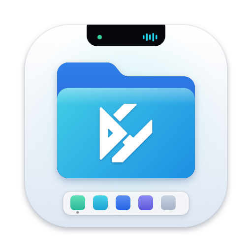

Dùng thử
0đ/ 7 ngày
Đủ thời gian để thử mọi thứ trên máy của bạn.
- Mở đầy đủ mọi tính năng
- Không cần thẻ, không cần tài khoản
- Giao diện tiếng Việt và tiếng Anh
- Hết hạn thì dữ liệu của bạn vẫn còn nguyên
Soft Notch ngay dưới tai thỏ, xem trước cửa sổ, Hộp đen giải thích vì sao máy chậm, tua lại tệp đã ghi đè, cảnh báo lộ khóa API và hơn 60 công cụ cho dev, dân văn phòng, dân design. Tất cả chạy trên máy, nhẹ đến mức bạn quên là nó đang chạy.
Ra mắt DHbox 1.5, chạy thử với 30 khách hàng.
Chốt bảng giá
Gửi báo giá chị Lan
Thử rê chuột lên tai thỏ, lên Dock, hoặc bấm icon DHbox trên thanh menu
Những việc nhỏ làm mỗi ngày, giờ chỉ cần một cú bấm.
Một app, đủ mọi việc
DHbox chỉ dùng các cổng mở rộng chính thức của macOS và một Soft Notch riêng. Finder, Dock và thanh menu vẫn là của bạn, chỉ làm được nhiều hơn.
Phần mở rộng ngay dưới tai thỏ: nhạc đang phát, cảnh báo, kệ kéo thả, lịch sử clipboard, ô lệnh gõ không dấu.
Xem trước cửa sổ trên Dock, Command Tab có ảnh, bấm Dock để thu nhỏ.
Hộp đen trả lời “vì sao chậm”, đóng băng app nền, xem tiến trình chiếm cổng.
Tua lại tệp bị ghi đè hay xóa nhầm, ảnh chụp cấu hình máy để so sánh sau cập nhật.
Cảnh báo khóa API và mật khẩu trong clipboard, tệp .env và lịch sử shell.
JWT, JSON sang Swift, bỏ dấu, sửa Telex, OCR, bảng màu, nén ảnh, gộp PDF.
Menu chuột phải, Quick Look cho .env và log, cắt dán tệp, DHbox Search.
Tổng quan máy, giữ máy thức, âm lượng từng app, mạng, ổ đĩa, pin.
Native Swift, chạy theo sự kiện, xử lý trên máy, dữ liệu mã hóa.
Tìm tệp theo nội dung, tạo thao tác trên tệp bằng lời có xem trước và hoàn tác, quy tắc Sự kiện, Điều kiện, Hành động.
Soft Notch
Rê chuột lên mép trên màn hình, Soft Notch mở ra ngay dưới tai thỏ. Máy không có tai thỏ hay màn hình ngoài thì DHbox dựng một notch ảo ở giữa mép trên.
Clipboard
Gõ thử “giu may”, “dong bang” hay “cong 3000”, rồi nhấn Enter.
Cửa sổ và Dock
Rê chuột lên một icon trên Dock để thấy ảnh từng cửa sổ của app đó. Bấm ảnh nào, cửa sổ đó lên trước. Có cả nút đóng ngay trên ảnh.
Ra mắt bản 1.5, chạy thử 30 khách.
Chốt bảng giá
Kế hoạch Q4
Giữ máy mượt
Hộp đen ghi lại sức khỏe máy theo thời gian: CPU, bộ nhớ, áp lực bộ nhớ, nhiệt, pin, ổ đĩa và tiến trình nặng nhất. Hỏi “vừa nãy sao máy chậm”, DHbox trả lời bằng tiếng Việt kèm mốc thời gian làm bằng chứng.
14:24 – 14:37, máy chậm vì Docker. Tiến trình com.docker.backend dùng trung bình 186% CPU, áp lực bộ nhớ lên mức vàng. Trước và sau khoảng này máy bình thường.
Rê chuột lên biểu đồ để xem từng mốc.
Không mất dữ liệu
Tua lại tệp theo dõi thư mục bạn chọn. Tệp bị sửa, ghi đè hay xóa đều có bản trước để khôi phục, kể cả khi app đã sửa nó không có nút hoàn tác.
Bảo mật
Bảo vệ secret nhận ra token, khóa API, khóa riêng trong clipboard, tệp .env, lịch sử shell và repo git. Clipboard chứa secret sẽ tự xóa sau vài giây.
Có thể là khóa AWS. Sẽ tự xóa sau 30 giây.
DATABASE_URL= STRIPE_SECRET_KEY= APP_ENV=production PORT=3000
Thư viện hành động
Copy một đoạn lỗi, một ảnh hay chọn vài tệp, DHbox nhận ra loại dữ liệu và đưa đúng hành động. Mỗi hành động có xem trước, luôn xuất ra tệp mới, tệp gốc giữ nguyên.
Trong DHbox, chọn đoạn chữ ở bất kỳ app nào rồi mở ô lệnh, gõ “bo dau”.
Finder
DHbox thêm mục vào menu chuột phải, Quick Look và thanh công cụ của Finder qua extension chính thức của Apple. Menu chỉ hiện hành động hợp với loại tệp bạn chọn.
AI và tự động hóa
Gõ “đổi tên ảnh theo ngày chụp rồi bỏ vào thư mục theo tháng”, DHbox lập kế hoạch, cho bạn xem trước từng tệp sẽ đổi ra sao. Bấm chạy, không ưng thì hoàn tác.
Xem trước, 4 trên 128 tệp
Nhẹ là yêu cầu thiết kế
DHbox chạy theo sự kiện của hệ thống thay vì liên tục kiểm tra. Khi bạn không dùng, nó gần như ngủ. Thu gọn Soft Notch là không còn hoạt ảnh, không còn hẹn giờ.
Danh sách đầy đủ
Mọi thứ DHbox làm được, gom theo nhóm. Gõ để tìm, không cần dấu.
Không có tính năng nào khớp. Thử từ khác, ví dụ “pdf” hay “cua so”.
Giá
Mọi tính năng đều mở trong thời gian dùng thử. Thấy hợp thì mua ngay trong app bằng VietQR, mã kích hoạt gửi về email.
0đ/ 7 ngày
Đủ thời gian để thử mọi thứ trên máy của bạn.
249.000đ/ trọn đời
Mọi tính năng, không giới hạn thời gian, không thuê bao.
Liên hệ
Cho nhóm, công ty cần nhiều máy hoặc xuất hóa đơn.
Hỏi đáp
DHbox chạy trên macOS 15 trở lên và được tối ưu cho máy Apple Silicon (M1 trở lên). Một số phần cần macOS 26 trở lên: giao diện Liquid Glass, AI chạy trên máy (cần bật Apple Intelligence) và công tắc trong Control Center. Trên macOS 15, các phần này có phương án thay thế, app vẫn dùng bình thường.
Không. DHbox chỉ cắm thêm qua các cổng mở rộng chính thức của macOS (extension Finder, Quick Look, App Intents) và tự dựng Soft Notch là một cửa sổ riêng. Không cần tắt SIP, không chèn mã vào app khác. Gỡ DHbox là máy trở lại như cũ.
Tải về và mở app là bắt đầu 7 ngày dùng thử với đầy đủ tính năng. Không cần thẻ hay tài khoản. Hết hạn, bạn mua mã ngay trong app để dùng tiếp.
Kéo DHbox vào thư mục Applications, rồi bấm chuột phải vào DHbox, chọn Mở, và bấm Mở lần nữa. Nếu vẫn bị chặn, vào Cài đặt hệ thống, mục Quyền riêng tư và bảo mật, kéo xuống và bấm Vẫn mở. Chỉ cần làm một lần; các bản cập nhật sau tự cài trong app.
249.000đ một lần, dùng trọn đời, không thuê bao. Thanh toán bằng chuyển khoản VietQR ngay trong app; tiền về là app tự kích hoạt và mã cũng được gửi qua email.
Mỗi mã dùng trên 2 máy Mac cùng lúc. Khi đổi máy, bạn gỡ máy cũ ngay trong app (mục Bản quyền) rồi kích hoạt trên máy mới. Quên mã thì dùng tính năng lấy lại mã qua email.
Mặc định là không. Hộp đen, tua lại tệp, chỉ mục tìm kiếm và AI đều chạy và lưu trên máy, dữ liệu nhạy cảm được mã hóa với khóa giữ trong Keychain. DHbox chỉ kết nối mạng để kiểm tra bản quyền và bản cập nhật.
Mỗi quyền chỉ được hỏi khi bạn bật tính năng cần nó. Ví dụ Trợ năng cho xem trước cửa sổ và phím trong Finder, Ghi màn hình cho ảnh xem trước cửa sổ. Trang Quyền trong Cài đặt cho biết tính năng nào dùng quyền nào. Thu hồi quyền thì tính năng đó tắt êm, app không bị lỗi.
DHbox tự kiểm tra bản mới mỗi ngày. Bạn bấm cập nhật hoặc bật tự tải và cài trong Cài đặt, mục Cập nhật. Mỗi bản đều được kiểm tra chữ ký số trước khi cài.
Gửi email tới devhousesoftware.inc@gmail.com hoặc gọi, nhắn Zalo 0869 528 304 (thứ Hai đến thứ Sáu, 08:30 đến 18:00).

Tải DHbox, dùng thử 7 ngày với đầy đủ tính năng.
Tải DHbox cho MacDHbox.dmg
Không thấy tệp tải xuống? Tải lại hoặc mở trang phát hành.